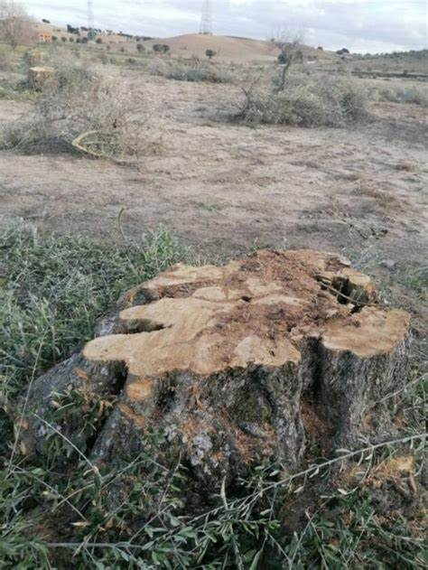
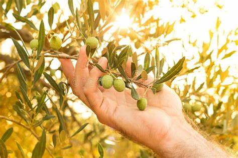

El problema
Para que puedas comprender la problemática, comenzaremos por decirte que de 50.000 hectáreas de plantaciones de olivos que existían, sólo quedan 5.000. Y ésto se debe a la baja rentabilidad que tiene la producción de olivo. Mantener las plantaciones demandan altos costos que se incrementa con la inflación, y es que a parte de las maquinarias e insumos necesarios, los productores también deben protegerlos de las heladas y granizos que padecen.
Debido a lo mencionado anteriormente, ellos consideran que vender las tierras para proyectos inmobiliarios les treará más ganancias que la producción de olivos.
Pero la verdad es que si existieran políticas para la conservación de la producción de olivo, los productores podrían seguir con la herencia que le han dejado sus abuelos.
La solución
Actualmente se están efectuando políticas para recuperar hectarea de plantación de olivos, pero también sabemos que no es suficiente.
Por eso decidimos formar parte del motor que ayude a Mendoza a posicionarse entre los primeros productores.
Cómo lo haremos? Donando el 5% de las ventas que se realicen en la plataforma a las cooperativas de productores locales, asi como también seremos el nexo entre ellos y quienes quieran involucrarse y sumar su granito de arena,ya sea donando a través del botón donar o/y comprando los productos de la platafoma.
Con lo recaudado sepodrán comprar insumosnecesarios, maquinarias y apoyar economicamente a quienes quieran iniciarse como agricultores olivícolas